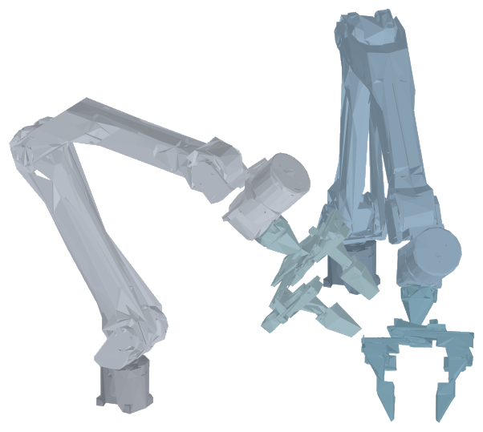
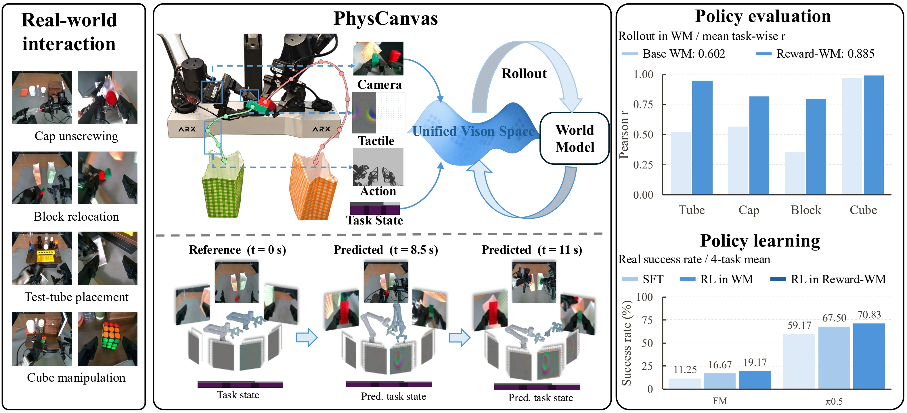
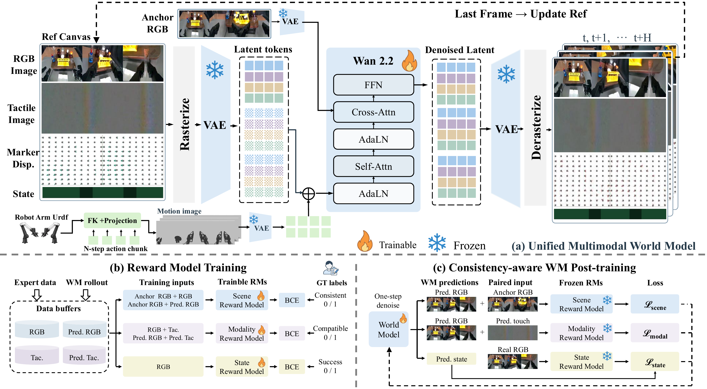
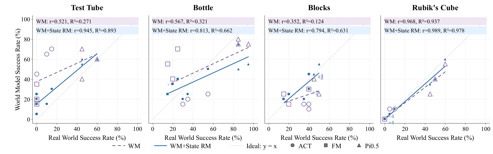
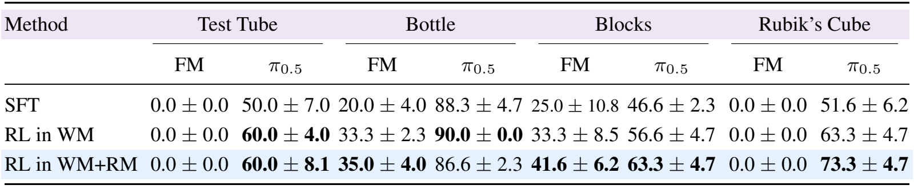

All in One Modal
Joint vision-tactile prediction for robot policy evaluation and learning.
Distinct tactile patterns from grasping different objects.
90th percentile XYZ displacement · native units

Representative object · schematic robot pose
Grasp, handover and right-hand reorientation.
Sensor-plane marker arrows · display scale ×5
Loading recording…

PhysCanvas maps multi-view RGB observations, tactile images, marker displacement, task state, and actions into a unified visual space. Conditioned on projected robot motion and reference observations, the model jointly predicts visual and tactile futures. Reward-based supervision supports consistent interactions, enabling robot policy evaluation and learning through imagined rollouts.

Unified multimodal generation. PhysCanvas combines multi-view RGB, tactile images, marker displacement, and task state in a unified canvas. A shared video VAE and Wan 2.2 predict future observations, conditioned on projected robot motion, an initial RGB anchor, and updated reference observations.
Consistency-aware post-training. Scene, Modality, and State Reward Models are trained using expert data and world-model rollouts. These reward models are then frozen to guide post-training toward scene consistency, visual-tactile compatibility, and agreement between predicted task state and task outcomes.
Modality structure before and within the world model.
Multi-view RGB, tactile images, marker displacement, and task state are projected into the same visual space; the panels show clean VAE latents and self-attention Value projections, with colors indicating source modality.
Ground truth and model predictions across contact-rich tasks.
Selected baseline failure cases and favorable PhysCanvas examples, not paired across methods. These qualitative examples do not estimate overall performance or success rates.


Selected baseline and GRPO policy rollouts. Episodes are not paired and do not estimate success rates.
Outcomes are visually assessed; failure descriptions refer to observed behavior.